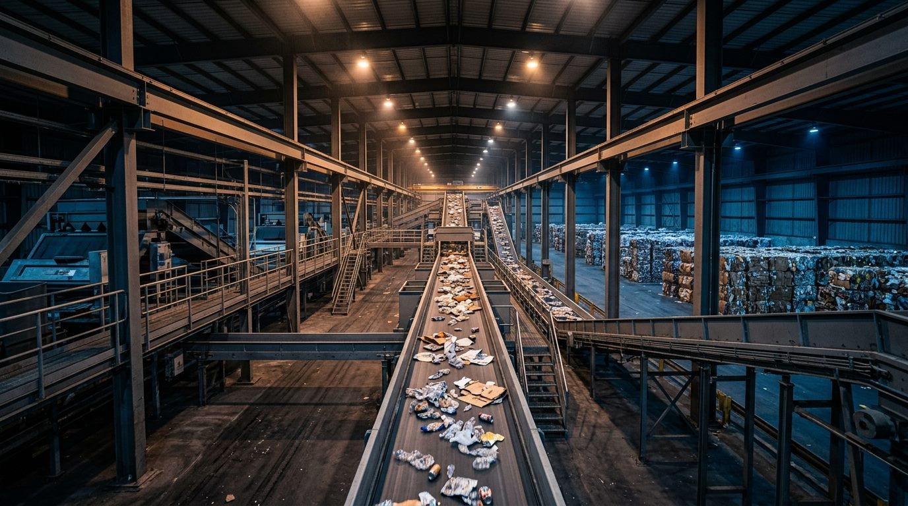
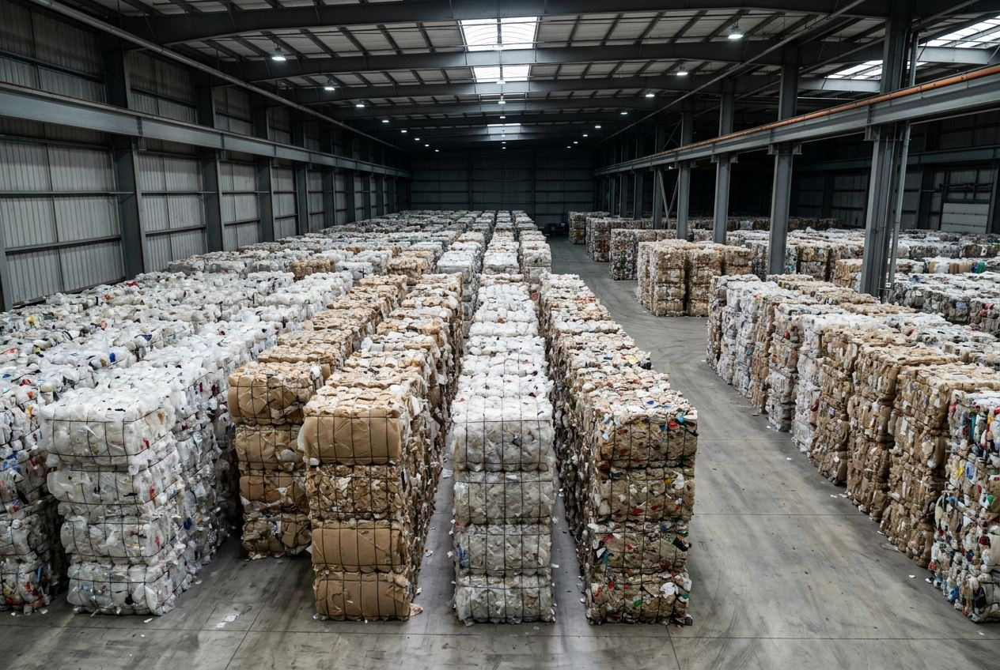
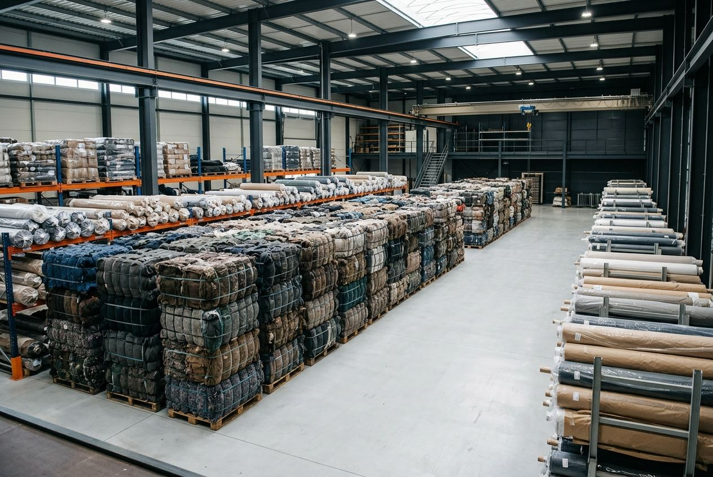

Waste Recovery & Secondary Material Supply
Structured operational workflows connecting waste generators, Material Recovery Facilities (MRFs), and downstream industrial recycling markets.

Waste Recovery & MRF Operations
What We Do: Commercial and industrial dry waste receiving, manual and mechanical segregation, baling, and volume recovery.
Who It Is For: Industrial plants, commercial parks, FMCG units, and municipal authorities.

Secondary Raw Material Supply
What We Do: Bulk procurement, quality grading, and supply of recovered polymer bales (PET, HDPE, PP, LDPE) and paper scrap.
Who It Is For: Plastic recyclers, compounders, packaging manufacturers, and paper mills.

Textile Waste Recovery
What We Do: Collection, fibre classification, and processing of post-industrial fabric cuttings and textile residues.
Who It Is For: Garment manufacturers, textile mills, spinning units, and felt manufacturers.

EPR Compliance Support
What We Do: Collection, channelization, weighing documentation, and audit-ready fulfillment support for Producers, Importers & Brand Owners (PIBOs).
Who It Is For: FMCG brands, consumer goods companies, packaging manufacturers, and electronics importers.

Corporate Waste Solutions
What We Do: Comprehensive dry waste collection, scheduled logistics, weight verification, and landfill diversion reporting.
Who It Is For: Manufacturing plants, IT parks, corporate campuses, and warehousing facilities.

Circular Material Trading
What We Do: Structuring secondary raw material supply agreements between waste generators, processors, and industrial end-users.
Who It Is For: Industrial buyers requiring steady batch supplies of quality-controlled recovered commodities.